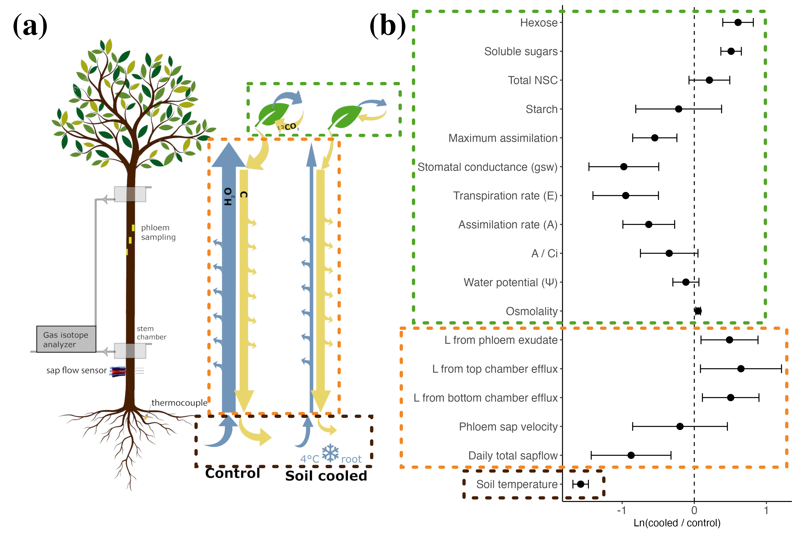
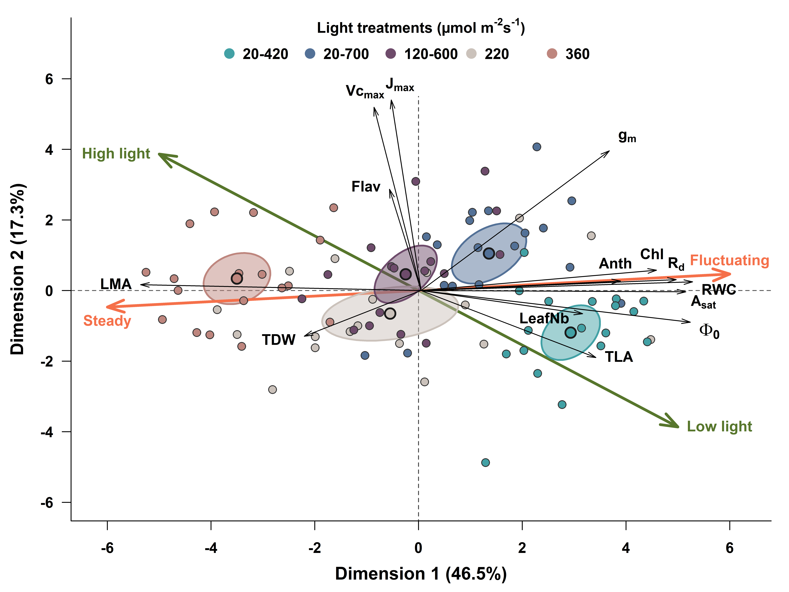
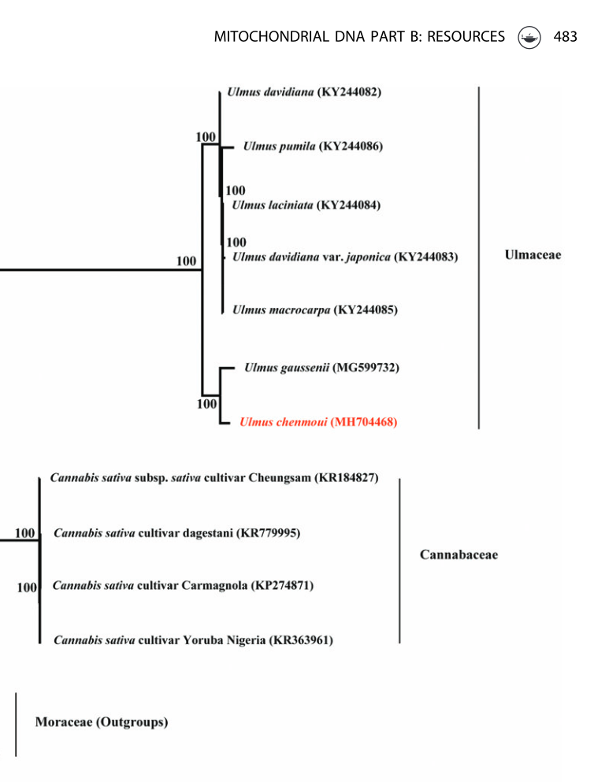
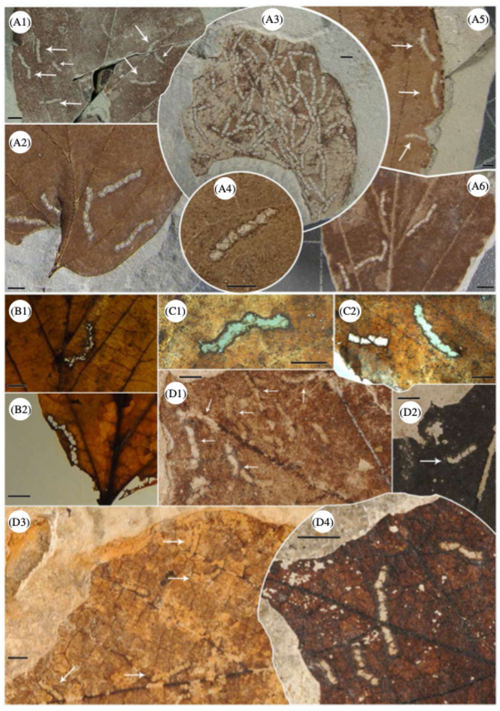
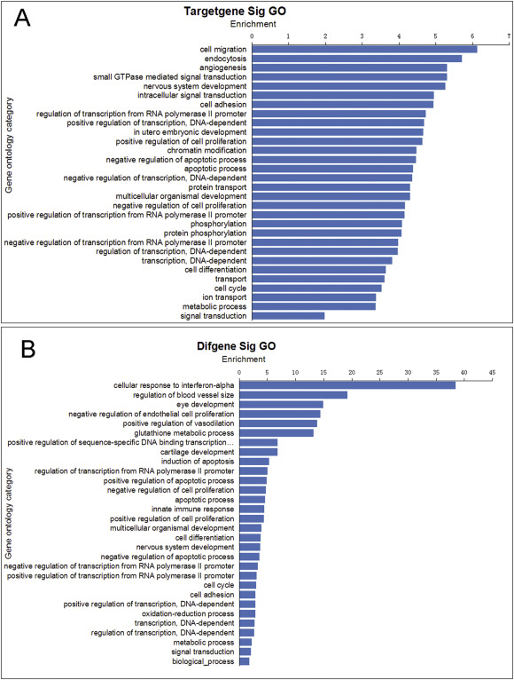

XIN ZHUANG
Education & Experience
INAR, University of Helsinki, FI
Investigating how carbon (C) sink limitation and soil drought affect tree phloem transport dynamics, photosynthesis regulation, NSC and hydraulic status. Alongside this research, I have collaborated cross-institutionally with UEF, LUKE, Fudan and NJU, co-supervised 4 student projects, and instructed and assisted in 3 master-level courses.
Dept. Ecology, Fudan University, CN
Joined a cross-continental invasion biology project on Japanese knotweed, a global invasive species; led the fieldwork in east Asia to assess the species’ ecological niche and started a common garden experiment to include further genotypes from Europe and US. This work led to two papers and one book chapter.
Nanjing University, CN
Designed and launched a common garden experiment on morphological and genetic variation of an endangered plant Parrotia subaequalis (Master thesis). Collaborated with NIGPAS on a palaeontology study of the sibling species of the same genus Parrotia. Learnt population genetics experimental skills including plant DNA/RNA extraction, SDS-PAGE and software for transcriptome sequence analyzing, etc. at Dept. Conservation Biology, Zhejiang University, CN during Oct 2016 – Jan 2017.
NJU Jinling College, CN
Intern
Lab. Molecular Medicine, Medical School, Nanjing University, CN
Focus: Performed toxicology experiments on mice exposed to MC-LR, a cyanotoxin; ran PCR, qRT-PCR and Flow Cytometry to monitor molecular level metabolic activity. This project led to one paper.
Exchange Student
Tunghai University, TW
Focus: Joined the field trip on intertidal species survey in Gaomei Wetland, Taichung.
Selected Publications
‣ Carbon sink-source coordination in birch under root-zone cooling: is phloem loading the main bottleneck? (submitted 10.2026)
mainplot

Core Insight: By combining stable isotope tracing, hydraulic status monitoring, source photosynthesis & NSC measurements, and advanced statistical modelling, this study reveals how phloem loading acts as the primary bottleneck for carbon source-sink coordination under root-zone chilling stress.
🔗 Link: View Preprint
‣ Cross-Continental Shifts of Ecological Strategy in a Global Plant Invader (2025)
mainplot

Core Insight: This research analyzes global ecological strategies of an invasive plant species, tracking macroecological shifts and adaptation mechanics across different continents.
🔗 DOI: 10.1111/GEB.70001
‣ Caught between two states: The compromise in acclimation of photosynthesis, transpiration and mesophyll conductance to different amplitudes of fluctuating irradiance (2024)
mainplot

Core Insight: This study explores the physiological trade-offs and acclimation mechanisms among photosynthesis, transpiration, and mesophyll conductance under fluctuating irradiance of varying amplitudes.
🔗 DOI: 10.1111/pce.15107
‣ A simple setup for online laser spectroscopy gas isotope analysers in online chamber systems (2021)
mainplot

Core Insight: Presents an accessible methodological framework for deploying laser spectroscopy gas isotope analyzers within real-time online chamber systems for precise ecosystem flux measurements.
🔗 DOI: 10.5194/amt-14-4445-2021
‣ A case of long-term herbivory: specialized feeding trace on Parrotia (Hamamelidaceae) plant species (2020)
mainplot

Core Insight: This research documents specialized feeding traces on Parrotia species, providing historical evidence for long-term plant-insect herbivory interactions and advancing our understanding of paleoecology.
🔗 DOI: 10.1098/rsos.201449
‣ Mining and characterization of novel EST-SSR markers of Parrotia subaequalis (Hamamelidaceae) from the first Illumina-based transcriptome datasets (2019)
mainplot

Core Insight: By leveraging Illumina-based transcriptome datasets, this study identifies and characterizes novel EST-SSR markers for Parrotia subaequalis, facilitating future population genetics and conservation efforts for this endangered lineage.
🔗 DOI: 10.1371/journal.pone.0215874
‣ Expression analysis of microRNAs and mRNAs in ovarian granulosa cells after microcystin-LR exposure (2017)
mainplot

Core Insight: This toxicological analysis reveals how microcystin-LR exposure alters the expression profiles of microRNAs and mRNAs, highlighting potential molecular mechanisms underlying reproductive toxicity.